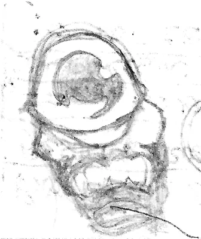

Image Testing
Thumbnail With Baguette Box
This is a look at using an embedded image from the images folder. If you put the files in the images folder then it automatically creates thumbnails and a slide-show, but there's a little trick to getting the folder references right.
HTML
If you use HTML you can just assume that the images folder is at the root of the site (make sure to set the class to "reference").
<a class="reference" href="/images/eyeball-man.webp" alt="Eyeball Man"><img src="/images/eyeball-man.thumbnail.webp"></a>
{kind=link}
The Thumbnail Shortcode
It took me a while to stumble upon this, but there is an image shortcode for those of us not using ReST (although it isn't directly linked to in the documentation for the ReST directive, from what I could tell). So if you want to do it the easier way:
- Put the original image in the
imagesfolder - use the shortcode:
{{% thumbnail "/images/eyeball-man.webp" alt="Eyeball Man" title="Eyeball Man" %}}{{% /thumbnail %}}
This will give you a thumbnail which will produce a pop-up to the original image when it's clicked. In this case the original pencil doodle was about the size of the end of my thumb so there's no real yount to the pop-up. I just used the image to have something to experiment with.
More Notes
- The
altattribute adds a title to the images in the slide show - Nikola builds the slideshow from all the images on the page. So if you only have one post open, it will show the post's images, but if you are in the blog-post index and there's more than one post shown, it will pick up the images from all the posts.